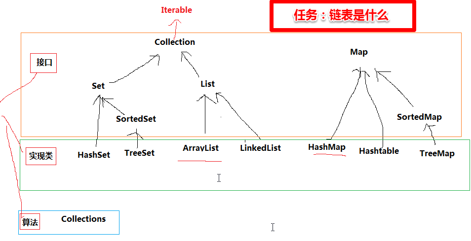

迭代器（Iterable）：从头到尾数一遍
HashSet就是操作了HashMap
HashMap的key其实就是set（不可重复）
HashTable安全synchronized效率低
synchronized同步方法：排队一 一访问
synchronized ['sɪŋkrənaɪz]
arrayList
LinkedList : Vector synchronized 安全的，效率低
Java集合类
18.Java集合类框架的基本接口有哪些？
集合类接口指定了一组叫做元素的对象。集合类接口的每一种具体的实现类都可以选择以它自己的方式对元素进行保存和排序。有的集合类允许重复的键，有些不允许。
Java集合类提供了一套设计良好的支持对一组对象进行操作的接口和类。Java集合类里面最基本的接口有：
- Collection：代表一组对象，每一个对象都是它的子元素。
- Set：不包含重复元素的Collection。
- List：有顺序的collection，并且可以包含重复元素。
- Map：可以把键(key)映射到值(value)的对象，键不能重复。
19.为什么集合类没有实现Cloneable和Serializable接口？
克隆(cloning)或者是序列化(serialization)的语义和含义是跟具体的实现相关的。因此，应该由集合类的具体实现来决定如何被克隆或者是序列化。
20.什么是迭代器(Iterator)？
Iterator接口提供了很多对集合元素进行迭代的方法。每一个集合类都包含了可以返回迭代器实例的
迭代方法。迭代器可以在迭代的过程中删除底层集合的元素。
21.Iterator和ListIterator的区别是什么？
下面列出了他们的区别：
- Iterator可用来遍历Set和List集合，但是ListIterator只能用来遍历List。
- Iterator对集合只能是前向遍历，ListIterator既可以前向也可以后向。
- ListIterator实现了Iterator接口，并包含其他的功能，比如：增加元素，替换元素，获取前一个和后一个元素的索引，等等。
22.快速失败(fail-fast)和安全失败(fail-safe)的区别是什么？
Iterator的安全失败是基于对底层集合做拷贝，因此，它不受源集合上修改的影响。java.util包下面 的所有的集合类都是快速失败的，而java.util.concurrent包下面的所有的类都是安全失败的。快速失败的迭代器会抛出
ConcurrentModificationException异常，而安全失败的迭代器永远不会抛出这样的异常。
23.Java中的HashMap的工作原理是什么？
Java中的HashMap是以键值对(key-value)的形式存储元素的。HashMap需要一个hash函数，它使用hashCode()和equals()方法来向集合/从集合添加和检索元素。当调用put()方法的时候，HashMap会计算key的hash值，然后把键值对存储在集合中合适的索引上。如果key已经存在了，value会被更新成新值。
HashMap的一些重要的特性是它的容量(capacity)，负载因子(load factor)和扩容极限(threshold resizing)。
24.hashCode()和equals()方法的重要性体现在什么地方？
Java中的HashMap使用hashCode()和equals()方法来确定键值对的索引，当根据键获取值的时候也会用到这两个方法。如果没有正确的实现这两个方法，两个不同的键可能会有相同的hash值，因此，可能会被集合认为是相等的。而且，这两个方法也用来发现重复元素。所以这两个方法的实现对HashMap的精确性和正确性是至关重要的。
25.HashMap和Hashtable有什么区别？
HashMap和Hashtable都实现了Map接口，因此很多特性非常相似。但是，他们有以下不同点：
- HashMap允许键和值是null，而Hashtable不允许键或者值是null。
- Hashtable是同步的，而HashMap不是。因此，HashMap更适合于单线程环境，而Hashtable适合于多线程环境。
- HashMap提供了可供应用迭代的键的集合，因此，HashMap是快速失败的。另一方面，Hashtable提供了对键的列举(Enumeration)。
26.数组(Array)和列表(ArrayList)有什么区别？什么时候应该使用Array而不是ArrayList？
下面列出了Array和ArrayList的不同点：
- Array可以包含基本类型和对象类型，ArrayList只能包含对象类型。
- Array大小是固定的，ArrayList的大小是动态变化的。
- ArrayList提供了更多的方法和特性，比如：addAll()，removeAll()，iterator()等等。
- 对于基本类型数据，集合使用自动装箱来减少编码工作量。但是，当处理固定大小的基本数据类型的时候，这种方式相对比较慢。
27.ArrayList和LinkedList有什么区别？
ArrayList和LinkedList都实现了List接口，他们有以下的不同点：
- ArrayList是基于索引的数据接口，它的底层是数组。它可以以O(1)时间复杂度对元素进行随机访问。与此对应，LinkedList是以元素列表的形式存储它的数据，每一个元素都和它的前一个和后一个元素链接在一起，在这种情况下，查找某个元素的时间复杂度是O(n)。
- 相对于ArrayList，LinkedList的插入，添加，删除操作速度更快，因为当元素被添加到集合任意位置的时候，不需要像数组那样重新计算大小或者是更新索引。
- LinkedList比ArrayList更占内存，因为LinkedList为每一个节点存储了两个引用，一个指向前一个元素，一个指向下一个元素。
也可以参考ArrayList vs. LinkedList。
28.Comparable和Comparator接口是干什么的？列出它们的区别。
Java提供了只包含一个compareTo()方法的Comparable接口。这个方法可以个给两个对象排序。具体来说，它返回负数，0，正数来表明输入对象小于，等于，大于已经存在的对象。
Java提供了包含compare()和equals()两个方法的Comparator接口。compare()方法用来给两个输入参数排序，返回负数，0，正数表明第一个参数是小于，等于，大于第二个参数。equals()方法需要一个对象作为参数，它用来决定输入参数是否和comparator相等。只有当输入参数也是一个comparator并且输入参数和当前comparator的排序结果是相同的时候，这个方法才返回true。
29.什么是Java优先级队列(Priority Queue)？
PriorityQueue是一个基于优先级堆的无界队列，它的元素是按照自然顺序(natural order)排序的。在创建的时候，我们可以给它提供一个负责给元素排序的比较器。PriorityQueue不允许null值，因为他们没有自然顺序，或者说他们没有任何的相关联的比较器。最后，PriorityQueue不是线程安全的，入队和出队的时间复杂度是O(log(n))。
30.你了解大O符号(big-O notation)么？你能给出不同数据结构的例子么？
大O符号描述了当数据结构里面的元素增加的时候，算法的规模或者是性能在最坏的场景下有多么好。
大O符号也可用来描述其他的行为，比如：内存消耗。因为集合类实际上是数据结构，我们一般使用大O符号基于时间，内存和性能来选择最好的实现。大O符号可以对大量数据的性能给出一个很好的说明。
31.如何权衡是使用无序的数组还是有序的数组？
有序数组最大的好处在于查找的时间复杂度是O(log n)，而无序数组是O(n)。有序数组的缺点是插入操作的时间复杂度是O(n)，因为值大的元素需要往后移动来给新元素腾位置。相反，无序数组的插入时间复杂度是常量O(1)。
32.Java集合类框架的最佳实践有哪些？
根据应用的需要正确选择要使用的集合的类型对性能非常重要，比如：假如元素的大小是固定的，而且能事先知道，我们就应该用Array而不是ArrayList。
有些集合类允许指定初始容量。因此，如果我们能估计出存储的元素的数目，我们可以设置初始容量来避免重新计算hash值或者是扩容。
为了类型安全，可读性和健壮性的原因总是要使用泛型。同时，使用泛型还可以避免运行时的ClassCastException。
使用JDK提供的不变类(immutable class)作为Map的键可以避免为我们自己的类实现hashCode()和equals()方法。
编程的时候接口优于实现。
底层的集合实际上是空的情况下，返回长度是0的集合或者是数组，不要返回null。
33.Enumeration接口和Iterator接口的区别有哪些？
Enumeration速度是Iterator的2倍，同时占用更少的内存。但是，Iterator远远比Enumeration安全，因为其他线程不能够修改正在被iterator遍历的集合里面的对象。同时，Iterator允许调用者删除底层集合里面的元素，这对Enumeration来说是不可能的。
34.HashSet和TreeSet有什么区别？
HashSet是由一个hash表来实现的，因此，它的元素是无序的。add()，remove()，contains()方法的时间复杂度是O(1)。
另一方面，TreeSet是由一个树形的结构来实现的，它里面的元素是有序的。因此，add()，remove()，contains()方法的时间复杂度是O(logn)。
59. Collection 框架中实现比较要实现什么接口
comparable/comparator
60. ArrayList 和 Vector 的区别
答：
这两个类都实现了 List 接口（List 接口继承了 Collection 接口），他们都是有序集合，即存储在这两个集合中的元素的位置都是有顺序的，相当于一种动态的数组，我们以后可以 按位置索引号取出某个元素，，并且其中的数据是允许重复的，这是 HashSet 之类的集合的最大不同处，HashSet 之类的集合不可以按索引号去检索其中的元素，也不允许有重复的元 素（本来题目问的与 hashset 没有任何关系，但为了说清楚 ArrayList 与 Vector 的功能，我们使用对比方式，更有利于说明问题）。
接着才说 ArrayList 与 Vector 的区别，这主要包括两个方面：.
1） 同步性：
Vector 是线程安全的，也就是说是它的方法之间是线程同步的，而 ArrayList 是线程序不安全的，它的方法之间是线程不同步的。如果只有一个线程会访问到集合，那最好是使用
ArrayList，因为它不考虑线程安全，效率会高些；如果有多个线程会访问到集合，那最好是使用 Vector，因为不需要我们自己再去考虑和编写线程安全的代码。
备注：对于 Vector&ArrayList、Hashtable&HashMap，要记住线程安全的问题，记住 Vector 与 Hashtable 是旧的，是 java 一诞生就提供了的，它们是线程安全的，ArrayList 与 HashMap 是 java2 时才提供的，它们是线程不安全的。所以，我们讲课时先讲老的。
2） 数据增长：
ArrayList 与 Vector 都有一个初始的容量大小，当存储进它们里面的元素的个数超过了容量时，就需要增加 ArrayList 与 Vector 的存储空间，每次要增加存储空间时，不是只增加 一个存储单元，而是增加多个存储单元，每次增加的存储单元的个数在内存空间利用与程序效率之间要取得一定的平衡。Vector 默认增长为原来两倍，而 ArrayList 的增长策略在文档 中没有明确规定（从源代码看到的是增长为原来的 1.5 倍）。ArrayList 与 Vector 都可以设置初始的空间大小，Vector 还可以设置增长的空间大小，而 ArrayList 没有提供设置增长空 间的方法。
总结：即 Vector 增长原来的一倍，ArrayList 增加原来的 0.5 倍。
61. HashMap 和 Hashtable 的区别
（条理上还需要整理，也是先说相同点，再说不同点）
HashMap 是 Hashtable 的轻量级实现（非线程安全的实现），他们都完成了 Map 接口，主要区别在于 HashMap 允许空（null）键值（key）,由于非线程安全，在只有一个线程 访问的情况下，效率要高于 Hashtable。
HashMap 允许将 null 作为一个 entry 的 key 或者 value，而 Hashtable 不允许。
HashMap 把 Hashtable 的 contains 方法去掉了，改成 containsvalue 和 containsKey。因为 contains 方法容易让人引起误解。
Hashtable 继承自 Dictionary 类，而 HashMap 是 Java1.2 引进的 Map interface 的一个实现。
最大的不同是，Hashtable 的方法是 Synchronize 的，而 HashMap 不是，在多个线程访问 Hashtable 时，不需要自己为它的方法实现同步，而 HashMap 就必须为之提供外同 步。
Hashtable 和 HashMap 采用的 hash/rehash 算法都大概一样，所以性能不会有很大的差异。
就 HashMap 与 HashTable 主要从三方面来说。
1、 历史原因：Hashtable 是基于陈旧的 Dictionary 类的，HashMap 是 Java 1.2 引进的 Map 接口的一个实现
2、 同步性：Hashtable 是线程安全的，也就是说是同步的，而 HashMap 是线程序不安全的，不是同步的
3、 值：只有 HashMap 可以让你将空值作为一个表的条目的 key 或 value
62. List 和 Map 区别?
一个是存储单列数据的集合，另一个是存储键和值这样的双列数据的集合， List 中存储的数据是有顺序，并且允许重复；Map 中存储的数据是没有顺序的，其键是不能重复的， 它的值是可以有重复的。
63. List, Set, Map 是否继承自 Collection 接口?
List，Set 是，Map 不是
64. List、Map、Set 三个接口，存取元素时，各有什么特点？
这样的题属于随意发挥题：这样的题比较考水平，两个方面的水平：一是要真正明白这些内容，二是要有较强的总结和表述能力。
如果你明白，但表述不清楚，在别人那里则等同于不明白。
首先，List 与 Set 具有相似性，它们都是单列元素的集合，所以，它们有一个功共同的父接口，叫 Collection。Set 里面不允许有重复的元素，所谓重复，即不能有两个相等（注 意，不是仅仅是相同）的对象 ，即假设 Set 集合中有了一个 A 对象，现在我要向 Set 集合再存入一个 B 对象，但 B 对象与 A 对象 equals 相等，则 B 对象存储不进去，所以，Set 集 合的 add 方法有一个 boolean 的返回值，当集合中没有某个元素，此时 add 方法可成功加入该元素时，则返回 true，当集合含有与某个元素 equals 相等的元素时，此时 add 方法 无法加入该元素，返回结果为 false。Set 取元素时，没法说取第几个，只能以 Iterator 接口取得所有的元素，再逐一遍历各个元素。
List 表示有先后顺序的集合， 注意，不是那种按年龄、按大小、按价格之类的排序。当我们多次调用 add(Obje)方法时，每次加入的对象就像火车站买票有排队顺序一样，按先来 后到的顺序排序。有时候，也可以插队，即调用 add(intindex,Obj e)方法，就可以指定当前对象在集合中的存放位置。一个对象可以被反复存储进 List 中，每调用一次 add 方法，这 个对象就被插入进集合中一次，其实，并不是把这个对象本身存储进了集合中，而是在集合中用一个索引变量指向这个对象，当这个对象被 add 多次时，即相当于集合中有多个索引指 向了这个对象，如图 x 所示。List 除了可以以 Iterator 接口取得所有的元素，再逐一遍历各个元素之外，还可以调用 get(index i)来明确说明取第几个。
Map 与 List 和 Set 不同，它是双列的集合，其中有 put 方法，定义如下：put(obj key,obj value)，每次存储时，要存储一对 key/value，不能存储重复的 key，这个重复的规则 也是按 equals 比较相等。取则可以根据 key 获得相应的 value，即 get(Object key)返回值为 key 所对应的 value。另外，也可以获得所有的 key 的结合，还可以获得所有的 value 的结合，还可以获得 key 和 value 组合成的 Map.Entry 对象的集合。
List 以特定次序来持有元素，可有重复元素。Set 无法拥有重复元素,内部排序。Map 保存 key-value 值，value 可多值。
HashSet 按照 hashcode 值的某种运算方式进行存储，而不是直接按 hashCode 值的大小进行存储。例如，"abc"--->78， "def" ---> 62，"xyz" ---> 65 在 hashSet 中的存储 顺序不是 62,65,78，这些问题感谢以前一个叫崔健的学员提出，最后通过查看源代码给他解释清楚，看本次培训学员当中有多少能看懂源码。LinkedHashSet 按插入的顺序存储，那 被存储对象的 hashcode 方法还有什么作用呢？学员想想!hashset 集合比较两个对象是否相等，首先看 hashcode 方法是否相等，然后看 equals 方法是否相等。new 两个 Student 插入到 HashSet 中，看 HashSet 的 size，实现 hashcode 和 equals 方法后再看 size。
同一个对象可以在 Vector 中加入多次。往集合里面加元素，相当于集合里用一根绳子连接到了目标对象。往 HashSet 中却加不了多次的。
65. 说出 ArrayList,Vector, LinkedList 的存储性能和特性
ArrayList 和 Vector 都是使用数组方式存储数据，此数组元素数大于实际存储的数据以便增加和插入元素，它们都允许直接按序号索引元素，但是插入元素要涉及数组元素移动等 内存操作，所以索引数据快而插入数据慢， Vector 由于使用了 synchronized 方法（线程安全），通常性能上较 ArrayList 差，而 LinkedList 使用双向链表实现存储，按序号索引数据 需要进行前向或后向遍历，但是插入数据时只需要记录本项的前后项即可，所以插入速度较快。
LinkedList 也是线程不安全的，LinkedList 提供了一些方法，使得 LinkedList 可以被当作堆栈和队列来使用。
66. 去掉一个 Vector 集合中重复的元素 Vector newVector = new Vector();
还有一种简单的方式，HashSet set = new HashSet(vector);
67. Collection 和 Collections 的区别。
Collection 是集合类的上级接口，继承与他的接口主要有 Set 和 List；
Collections 是针对集合类的一个帮助类，他提供一系列静态方法实现对各种集合的搜索、排序、线程安全化等操作。
68. Set 里的元素是不能重复的，那么用什么方法来区分重复与否呢? 是用==还是 equals()? 它们有何区别?
Set 里的元素是不能重复的，元素重复与否是使用 equals()方法进行判断的。
equals()和==方法决定引用值是否指向同一对象 equals()在类中被覆盖，为的是当两个分离的对象的内容和类型相配的话，返回真值。
69. 你所知道的集合类都有哪些？主要方法？
最常用的集合类是 List 和 Map。 List 的具体实现包括 ArrayList 和 Vector，它们是可变大小的列表，比较适合构建、存储和操作任何类型对象的元素列表。 List 适用于按数值索 引访问元素的情形。
Map 提供了一个更通用的元素存储方法。 Map 集合类用于存储元素对（称作"键"和"值"），其中每个键映射到一个值。
ArrayList/Vector → List
→ Collection
HashSet/TreeSet → Set
Properties → HashTable
→ Map
Treemap/HashMap
我记的不是方法名，而是思想，我知道它们都有增删改查的方法，但这些方法的具体名称，我记得不是很清楚，对于 set，大概的方法是 add，remove，contains；对于 map， 大概的方法就是 put，remove，contains 等，因为，我只要在 eclispe 下按点操作符，很自然的这些方法就出来了。我记住的一些思想就是 List 类会有 get(int index)这样的方法， 因为它可以按顺序取元素，而 set 类中没有 get(int index)这样的方法。List 和 set 都可以迭代出所有元素，迭代时先要得到一个 iterator 对象，所以，set 和 list 类都有一个 iterator 方法，用于返回那个 iterator 对象。map 可以返回三个集合，一个是返回所有的 key 的集合，另外一个返回的是所有 value 的集合，再一个返回的 key 和 value 组合成的 EntrySet 对象的集合，map 也有 get 方法，参数是 key，返回值是 key 对应的 value。
70. 两个对象值相同(x.equals(y) == true)，但却可有不同的 hash code，这句话对不对?
对。如果对象要保存在 HashSet 或 HashMap 中，它们的 equals 相等，那么，它们的 hashcode 值就必须相等。
如果不是要保存在 HashSet 或 HashMap，则与 hashcode 没有什么关系了，这时候 hashcode 不等是可以的，例如 arrayList 存储的对象就不用实现 hashcode，当然，我们没 有理由不实现，通常都会去实现的。
71. TreeSet 里面放对象，如果同时放入了父类和子类的实例对象，那比较时使用的是父类的 compareTo 方法，还是使用的子类的 compareTo 方法，
还是抛异常！
（应该是没有针对问题的确切的答案，当前的 add 方法放入的是哪个对象，就调用哪个对象的 compareTo 方法，至于这个 compareTo 方法怎么做，就看当前这个对象的类中是如何
编写这个方法的）实验代码：